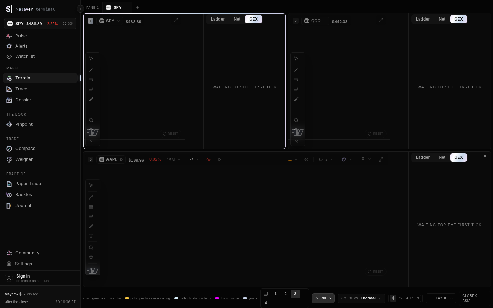
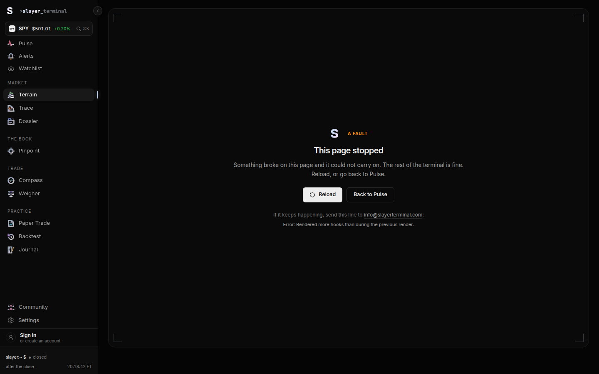
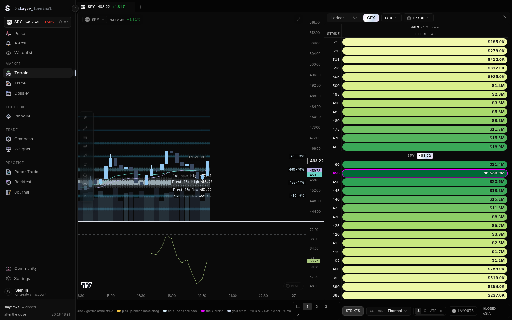
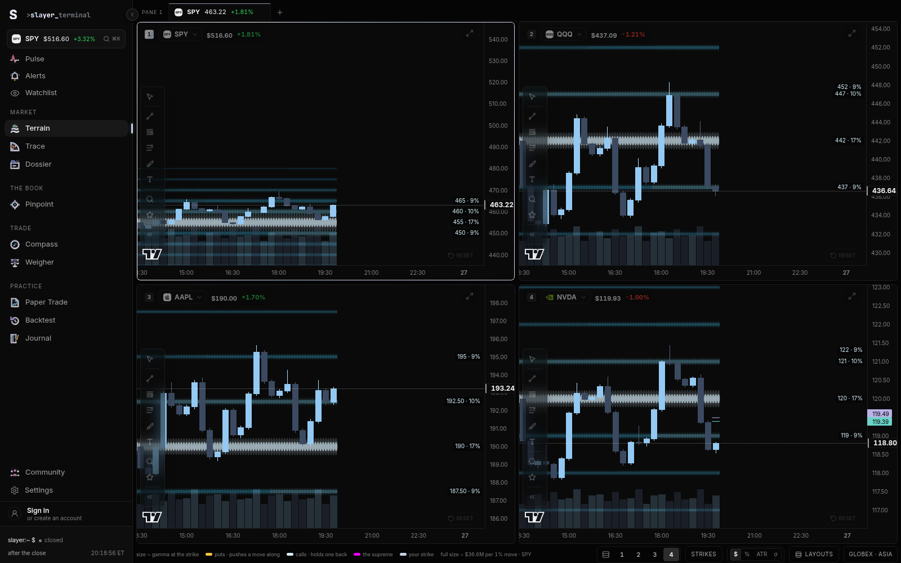
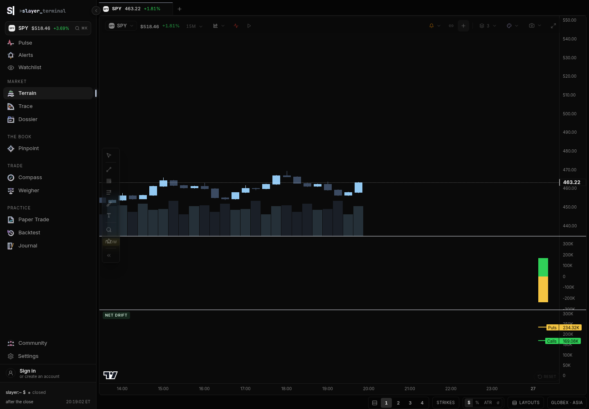
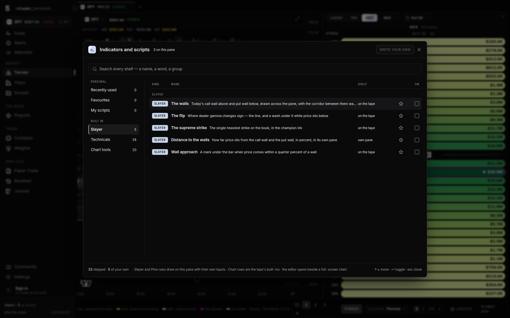
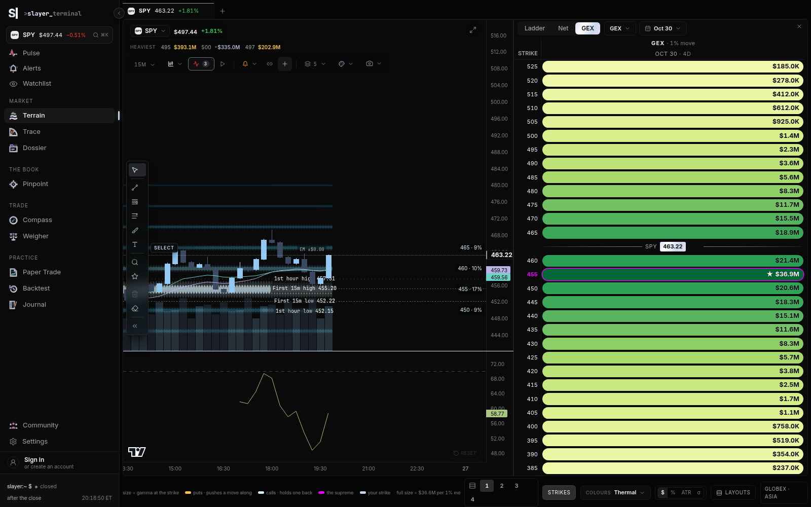
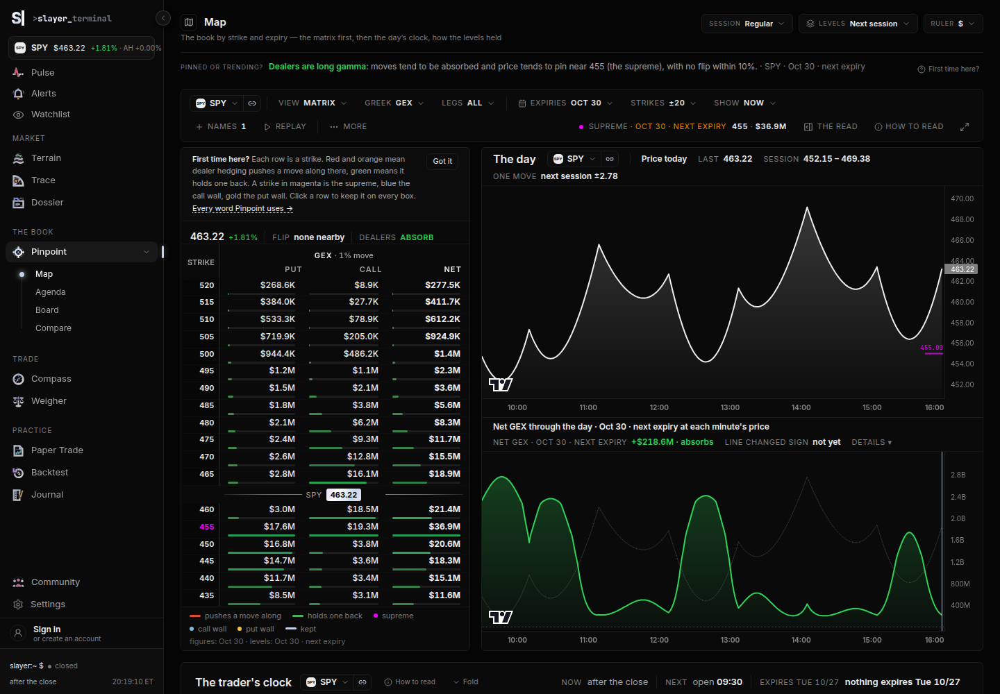
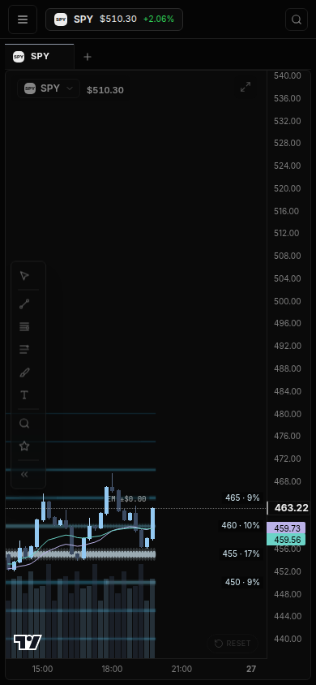
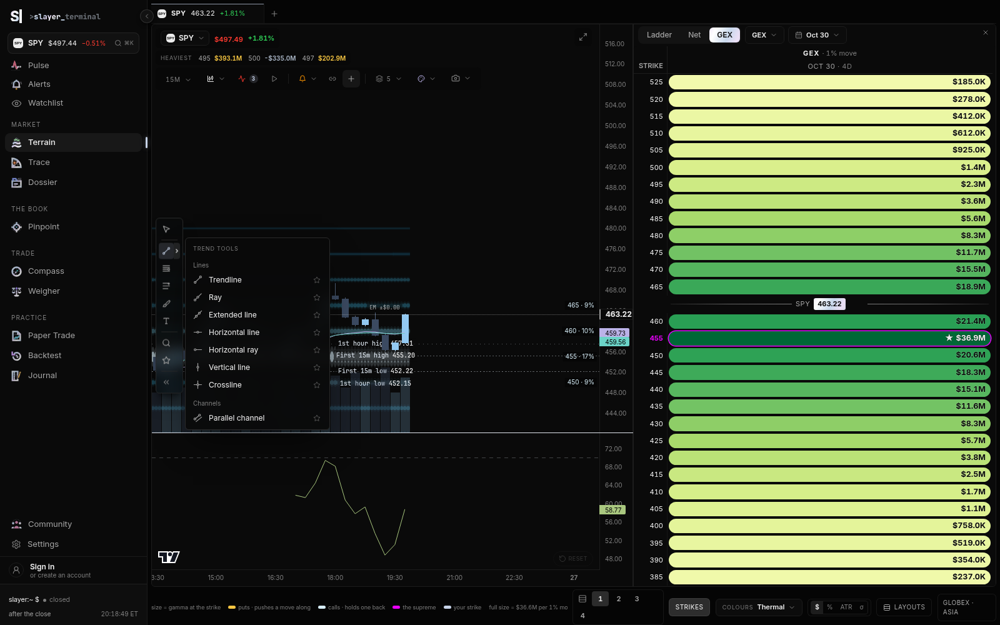

Slayer terminal · Terrain
A developer brief on how /terrain actually draws, where it already beats a full options charting terminal, and the concrete changes that would make the gap obvious to a trader.
Terrain is the chart desk: one to four panes, each with its own symbol, interval, overlays, studies and an optional strike rail. It is not a separate “gamma surface” page. The strike-by-expiry book lives on Pinpoint’s map and is pulled into the rail’s GEX tab. Both are in this brief, because a trader comparing the product to OpenMarket will judge them as one terminal.
OpenMarket, from the guide, is a browser chart with a large options dock: six header numbers, four tabs (Levels, Flow, Volatility, Chain), a GEX heat behind candles, an expected-move cone, and 241 gallery indicators. Free accounts get three “data” indicator slots for the whole layout. Classic studies (RSI, moving averages) are unlimited.
/api/uw with a synthetic book shaped like the client’s parser (one-minute bars, greek-exposure by strike, IV, a term row). Prices in that book are invented. The simulator keeps ticking underneath, which is why the screenshots show two different SPY prices at once. That disagreement is the product bug, not a caption error.
uwBook.ts). The header price, the heaviest-strike line, the call wall, put wall, flip and supreme read the in-browser simulator (buildLevelsFor / buildLadderFor). On the synthetic render the chart printed 463.22, +1.81% while the header printed about $497 with that same +1.81%. The percent came from the live book. The dollars came from the simulator.ExposureField returns early while snapshot is null, then calls more hooks once the book is live. React throws “Rendered more hooks than during the previous render” and the route boundary replaces Terrain with “This page stopped.” A three-up desk with rails did this every time the synthetic book landed. A one-up desk sometimes survived if the book was ready before the field’s first paint.levelsOf picks the nearest sign-change midpoint. Pinpoint uses core/gammaFlip.ts. On the same synthetic book the Map said “no flip within 10%” and “pin near 455.” Terrain’s heaviest line was naming simulator strikes around 495–520.slayer.callWall. OpenMarket’s own guide complains that its flip, top node and heats disagree with each other, and that the expected-move card covers the chart. Fix the one-book bug and Terrain is the cleaner GEX chart. Chasing all 241 indicators would copy the weakness.Route: slayer/src/App.tsx mounts Terrain at /terrain inside the app shell. The page file is slayer/src/pages/terrain/Terrain.tsx (about 3,260 lines). Three siblings hold the bits that can be tested without the chart library:
| File | Job |
|---|---|
pages/terrain/Terrain.tsx | Desk state, persistence, the pane, the rail cut, crosshair sync, keyboard. |
pages/terrain/setups.ts | Which fields follow the symbol (interval, overlays, studies, style, compares, price scale) and which follow the slot (ticker, rail, theme, link group). |
pages/terrain/layouts.ts | Named layouts in slayer_terrain_layouts_v1, cap 12. |
pages/terrain/paneKeys.ts | Timeframe step and the symbol ring. Covered by npm test. |
components/gex/StrikeChart.tsx | lightweight-charts host. Candles, studies, compare, and every overlay primitive. |
components/gex/ChartToolbar.tsx | Interval, overlays, studies, style, scale, replay, alerts, snapshot. |
components/gex/ProfilePanel.tsx | The strike rail: Ladder / Net / GEX. GEX and Net mount ExposureField. |
data/uwBook.ts | The live book. Candles, chain, IV, history. Null until status is live. |
core/simulator.ts | Seeded tape and OI book. SPY starts at 500 and then drifts. This is what the header still trusts. |
data/indicators.ts | EMA, VWAP, RSI, MACD, Bollinger, ATR. Plain numbers, no chart types. |
core/pine/ | Pine v6 subset. Built-ins in data/builtinScripts.ts. |
core/walls.ts, core/gammaFlip.ts | The wall rule and the repriced flip. Used by the Map. Not used by Terrain’s rung prices. |
Stored under slayer_terrain_v1. Layout is 1–4. Four pane slots are always kept; only layout of them are shown. Default layout is 3. Default overlays: exposure trails and volume on, key levels off, cone off, session levels off. Default studies: all off.
Symbol memory (SETUP_KEYS) is earned by touch and capped at 60 names. Linking (groups A and B) copies the symbol only. It does not copy the interval. That was a deliberate reversal: panes are different instruments, not four copies of one chart.
revision. Terrain passes that into each StrikeChart so overlays refresh without remounting.displayBars asks uwBook for one-minute candles and aggregates them. Sub-minute and range/volume bars do not invent history; they stay empty until a seconds tape exists.overlays.trails and the interval is intraday, GexTrailsPrimitive paints strike×time beads from bookHistory(). The cold fold is sliced so the first paint can be candles alone. Trails hide in replay and on non-time bars.railForCut builds the header levels. On the default cut ('book') that is the simulator snapshot, not snapshotOf.overlays.levels, KeyLevelsPrimitive draws short rungs at the right edge: call wall green, put wall red, flip dashed, supreme heavier. The hover card explains the level in one sentence.buildExpectedMoveCone) is two objects: a band grown from the open, and a forward cone from now to the bell, both from the book’s IV in trading minutes. It is white, not dealer-colored. It is off until asked, and off in replay.data/indicators.ts. At most two sub-panes (RSI, MACD, ATR). A third is refused.snapshotOf(ticker). Until that returns a live chain, ExposureField shows “Waiting for the first tick.” When it later returns a chain, the component crashes (section 3).// slayer/src/components/gex/StrikeChart.tsx
export function displayBars(ticker: string, mins: number, alt?: AltBarSpec | null): Candle[] {
if (alt || mins < 1) return [];
ensureBook(ticker, 'board');
return aggregateCandles(bookCandles(ticker) ?? dayBars(ticker) ?? [], mins);
}
// slayer/src/pages/terrain/Terrain.tsx — the rail's default cut
function railForCut(ticker: string, cut: RailCut): RailData {
if (cut === 'book') {
const base = buildLadderFor(ticker); // simulator GEX history
// ... legs from Simulator.snapshotFor(ticker)
return { ...base, levels: buildLevelsFor(ticker), legs };
}
const spot = Simulator.TICKERS[Simulator.ensureTicker(ticker)].currentPrice;
// a calendar DTE uses buildExposureSurface off that same simulator spot
}
// slayer/src/data/gex.ts — header percent prefers the live book, dollars do not
export function spotChangePct(ticker: string): number {
const live = peekChange(ticker);
if (live != null) return live;
const cfg = Simulator.TICKERS[Simulator.ensureTicker(ticker)];
return ((cfg.currentPrice - cfg.basePrice) / cfg.basePrice) * 100;
}
The header then prints levels.spot (simulator) next to changePct (live, when the book has a change). That is the $497 beside +1.81% in the screenshots. ProfilePanel’s comment still says the GEX tab “is the simulator’s read.” The code calls snapshotOf.
| Switch | What the trader sees | Where it is computed | Default |
|---|---|---|---|
| Exposure trails | Beads of dealer exposure by strike across the session. Heaviest strikes labelled at the right edge. | gexNodesPrimitive.ts from bookHistory() | On |
| Key levels | Call wall, put wall, flip, supreme as short rungs. | Prices from buildLevelsFor today. Paint in keyLevelsPrimitive.ts. | Off |
| Volume | Histogram under the candles. | Same bars as the tape. | On |
| Expected move | ±1σ and ±2σ from the open, plus the cone still left until the bell. | data/expectedMove.ts, drawn with the thermal field. | Off |
| Session levels | Prior high, low, close, opening range, initial balance. Dash pattern tells them apart. | data/sessionLevels.ts | Off |
| Flow | Call premium up, put premium down, in its own pane. | data/flowBars.ts from the simulator tape (flowTape), not OPRA. | Off |
| Net drift | Running call total vs put total. | data/driftSeries.ts, same tape. | Off |
| Vol drift | Realised vol of these bars against the feed’s implied. | data/volDrift.ts. Implied is flat in the simulator. | Off |
| Dark pool | Dashed lines at off-exchange prints. | buildPrints in data/gex.ts, seeded from the simulator spot. | Off |
| Events | Earnings, FOMC / CPI / NFP, large prints, in a lane above the time axis. | data/events.ts | Off |
| Alert lines | Dotted line where a price alert sits. | Alert store. Off unless asked. | Off |
dexStrike (“exposure by strike” docked under the tape) is on the overlay type but Terrain’s toolbar removes it. The rail is supposed to be that view. Pulse’s chart tile still draws StrikeExposureBand.
Range bars and volume bars turn off trails, flow, net drift, vol drift, session levels, the cone and events. The menu knows this (CLOCK_HELD_OVERLAYS). That honesty is worth keeping.
Ten, all periods fixed in StrikeChart’s series builder. The Pine copies of the same studies take inputs. The native ones do not.
| Study | Plain meaning | Where |
|---|---|---|
| EMA 9 / 21 / 50 | Seeded exponential average of the close. The seed is the first close, on purpose, so the left edge does not jump. | On the candles |
| SMA 200 | Mean of the last 200 closes. Blank until the window exists. | On the candles |
| VWAP | Session typical-price × volume, reset when a bar gap looks like a new session. | On the candles. Off on range bars. |
| VWAP bands | ±1σ and ±2σ around that VWAP, volume-weighted. | On the candles |
| Bollinger | 20-bar average ± 2 standard deviations. | On the candles |
| RSI 14 | Wilder RSI. 30 and 70 rails. | Own pane |
| MACD 12/26/9 | Difference of two EMAs, a signal line, a histogram. | Own pane |
| ATR 14 | Wilder average true range of the bars on this pane. | Own pane |
Sub-pane cap is 2 (MAX_SUB_PANES). The value row under the crosshair only prints the single-line overlays (the three EMAs, VWAP, SMA).
24 scripts in data/builtinScripts.ts. Five are Slayer-specific and read slayer.callWall, slayer.putWall, slayer.flip, slayer.supreme. The runner is not passed slayer.netGex even though the type allows it. The other 19 are ordinary trend, band, momentum and volume studies (ribbon, supertrend, Ichimoku, Keltner, Donchian, stochastic, ADX, CCI, Williams %R, MFI, OBV) with inputs, which is how a reader changes a period today.
The walls script fills the corridor between call and put wall and defines alerts for a close through either wall. Those alerts only mean something once the scalars are the live book.
| Name | Intended meaning in this codebase | What Terrain’s rungs use today |
|---|---|---|
| Call wall | Heaviest call-dominant shelf. Above price a rally tends to slow; below, it can act as support. Sign matters: a shelf keeps its side when price walks through it (core/walls.ts). | Largest |GEX| above the simulator spot. Side of spot, not option side. |
| Put wall | Heaviest put-dominant shelf. A put wall above price is overhead hedging, not a floor. The rung card already says this. | Largest |GEX| below the simulator spot. |
| Flip | Where dealer hedging changes side, from a chain repriced with each contract’s vol (core/gammaFlip.ts). | Midpoint between the nearest sign change on the simulator snapshot. |
| Supreme | The strike with the most hedging in the book. Price is drawn toward it into expiry. | Max |GEX| on the simulator snapshot. |
| Pin | Strike with the most open interest. Separate from the supreme. | On the profile / Map, not a Terrain rung. |
| Max pain | The strike that hurts the most open premium. data/pins.ts. | Not on Terrain. Shown on the vendor desk. |
/pinpoint/map). Strike × expiry book, a regime sentence, the day’s clock, how levels held. This is the page that uses the real flip. It rendered on the synthetic book (screenshot 9).flowTape, which is the same idea as Trace and not the Unusual Whales greek-flow route.vannacharm.ts, hedgeFlow.ts, airPockets.ts, ahead.ts). The rail can show the hedge-flow lane. Close-odds are not a chart overlay.Not built as a chart product: a named skew chart, IV-rank history on the tape, variance-risk premium, a 25-delta risk reversal, NOPE as an overlay, an odds cloud, exposure history across sessions, a GEX-versus-hypothetical-spot curve. Several of the inputs already arrive in uwBook (IV rank, term structure, interpolated one-day move) and are dropped on the floor.
Styles: candles, hollow candles, bars, line, step, area, baseline. Price scale: linear, log, percent, indexed to 100. A percent compare locks the axis and the toolbar says why. Compare modes: same pane in percent, same pane with a left scale, or its own pane. Up to four symbols. Compare is removed from the UI on a 3- and 4-up desk. Timeframes: 15s, 1m, 5m, 15m, 30m, 1h, 1D, 1W. No 1s. No Renko. 15s stays empty until a live seconds tape exists, and the code says so.
Drawing tools: 34 kinds across trend, fib, measure (including long/short position and anchored VWAP), shapes and notes. They persist per ticker. None of them stick to a live level. Keyboard on the desk: 1–4 layout, brackets to change pane, minus/equals for timeframe, arrows for symbol, R rail, P replay, D draw, F fullscreen, S symbol, C compare, Esc leaves fullscreen.
Replay is per pane and not saved. It hides the live overlays (levels, cone, session, events, trails) so a scrub does not pretend yesterday’s book is still the book.
Shots are from the dev server. Synthetic shots are labelled. Dollar gamma in them is not a market print.









hidden xl:block in Terrain). Chart price 463.22, header about $510. Usable as a tape. Not usable as a book.
ExposureField does a large amount of hook setup, then returns early when there is no snapshot. The next hook, useState for the phone band, sits after that return, around line 1179. More effects follow. Rules of hooks: every render must call the same hooks. The waiting render does not call phoneBand. The live render does. React aborts the tree.
// slayer/src/components/gex/ExposureField.tsx
if (!snapshot || !surface) {
return (
<div className="h-full min-h-[300px] ...">
Waiting for the first tick
</div>
);
}
// ... later, still inside the function ...
const [phoneBand, setPhoneBand] = useState(false);
Move every hook above the return. The empty state can stay; it just cannot skip hooks. Until that lands, a trader who turns the rail on and has a working data key can lose the whole desk the moment the book resolves. The one-up shot survived only because the book was sometimes ready before the field’s first commit.
OpenMarket column is behavior from the functional guide (sections on the options dock, GEX tools, the cone, the 241-indicator gallery, and the guide’s own “better version” notes). It is not a second session of that product.
| Terrain | OpenMarket | Who is stronger | |
|---|---|---|---|
| Call wall, put wall | Drawn, with a sentence that a put wall above spot is not support. Prices currently come from the simulator and from “which side of spot,” which core/walls.ts was written to stop doing. | On Options GEX, Spot Exposures, Strike Lanes, the matrix. The guide says the colours and the flip disagree across those tools. | Terrain’s words are better. Terrain’s numbers are not yet the book’s numbers. After one source of truth, Terrain wins. |
| Gamma flip | Real implementation exists (gammaFlip.ts) and the Map uses it. The chart rungs use a midpoint. | Shown in the header, on the heat, and on the dashboard. The guide’s main complaint is that those three disagree, and the UI never says why. | Neither, today. Terrain can win by showing one flip and naming the scope. OpenMarket already lost this argument in its own guide. |
| Top node / supreme | Supreme is a first-class rung and a Pine series. | “Top node” in the header, with an “alert at this strike” action. | OpenMarket’s alert is the missing piece. Terrain’s naming is clearer. |
| Max pain | Computed in pins.ts. Not on the chart. | A line on Options GEX and in exposure history. | OpenMarket, until Terrain adds it as a quiet extra rung. |
| Dealer regime | A sentence on the Map (“long gamma, pin near the supreme”). Not in the Terrain header. | Header chip: long gamma means calmer, short gamma means moves get chased. Click opens a plain-language card. | OpenMarket on the chart. Terrain already has the sentence one route away. Put that sentence on the pane. Do not build their nine-tile dashboard. |
| Scope (which expiries) | Desk-wide rail cut: one calendar date or “every expiry.” The chart rungs do not say which cut they used, and the default cut is the simulator. | Most tools take an expiry preset. The guide says the header, the heat and the dashboard still disagree. | OpenMarket has the control. Terrain has a better place to put the answer: on the rung card, one scope, same function as the Map. |
| Terrain | OpenMarket | Who is stronger | |
|---|---|---|---|
| Strike × time | Exposure trails. One layer, beads, intraday only, 5-minute texture, hidden in replay. | Spot Exposures and Options Heatmap both paint a strike×time field, and the matrix paints another. The guide says they cover each other and fight the candle colours. | Terrain. One field is the point. Keep it off the candle colours (the rungs were already pulled out of the heat for that reason). |
| Strike × expiry | The rail’s GEX tab, and the Map. Right idea: the book is beside the tape, on the tape’s price scale (PriceProjection). | Strike Matrix on the chart, plus the heat, plus Spot Exposures. 28 settings on the matrix. Defaults called too busy. | Terrain’s layout is better. It currently crashes, and it reads a different book from the candles. |
| GEX by strike, horizontal bars | Not a second axis. The rail’s size lane is the bar chart, aligned to price. | Options GEX docks bars on the price axis. The guide: thin bars, axis clutter, 60-second refresh, one instance per chart, colours that don’t match the other tools. | Terrain, once the rail and the candles share a spot. |
| Curve of GEX vs a hypothetical spot | Not drawn. spotScenario.ts and the exposure profile are the raw material. | Options GEX Curve, its own pane, its own strike axis. The guide says that axis is not linked to price, and the flip on it doesn’t match Spot Exposures. | OpenMarket has it. If Terrain adds it, put it in the rail under the same scale, not a new pane with a new flip. |
| Greek lens (vanna, charm, delta, vega) | Data exists. The Map and the rail’s field can switch greek. Trails default to GEX and Terrain does not expose the switch. | Greek Exposure: one greek, bars by strike, a by-expiry pane. No alerts, and the card stacks on the GEX card. | Roughly even, and both are easy to over-build. A greek toggle on the trail is enough. |
| History of the levels | levelRecord.ts can say “call wall moved 765 → 762.” Not drawn on the tape. | Exposure History: walls, flip and max pain as step lines, plus a percentile. Needs about 20 sessions or it is blank. Looks like hand-drawn lines. | OpenMarket has the chart. Terrain has the event (“it moved”) which is the more useful sentence. Draw notches, not a second set of lines. |
| Terrain | OpenMarket | |
|---|---|---|
| What is drawn | One session. Band from the open, cone from now to the bell, ±1σ and ±2σ, from the feed’s IV, in trading minutes. Crossings of the 1σ edge are returned. The cone collapses into the close on a 0DTE afternoon, which is the correct picture. | Move high/low and 1σ rails from the prior close, plus forward cones for the close, next day, week, OpEx and 30 days. About 30 settings. A hover card the guide describes as ~30 rows. |
| When it fails quietly | Off by default. Hidden in replay and on range bars. If IV is missing the cone is empty. The toolbar does not say which of those happened. | Cones vanish past a bar-count rule without an explanation. Rail colours are hard to tell apart. No hit-rate history. |
| Verdict | Terrain’s geometry is the better intraday object. OpenMarket covers more horizons and then hides them under a card. Add week and next-expiry as a mode, using the term structure uwBook already stores. Keep the readout to one line: high, low, and whether price is outside. A local scorecard (“closed inside ±1σ on N of the last 20 sessions”) is something their guide says they do not have. | |
| Terrain | OpenMarket | |
|---|---|---|
| Count | 10 native studies, 24 Pine scripts (5 of them dealer levels), 12 overlays. | 241 in the gallery. About 68 are “market data” (options, GEX, flow, vol, plus crypto series). Order-flow tools are mostly crypto-only. |
| Settings | Native periods are hardcoded. Pine inputs work. No per-timeframe visibility, no templates. | Every indicator has General, Style, Plot, Visibility, Price marker. Visibility can differ by interval. Templates exist. |
| Cost | None. Turning on trails does not spend a slot. | Classics are free. Options, heatmaps, footprint, TPO and community scripts spend slots. Free plan: 3 slots for the whole layout. Plus: 10 per chart. The “show levels” preset costs 2, so a free account has one slot left. |
| Options-specific studies they have and Terrain does not chart | Net flow, premium tide, flow tape, premium by strike, greek flow, NOPE, OI changes, estimated dealer positioning, IV rank as a plot, variance risk premium, vol regime, risk-reversal skew, skew history, IV smile, term structure, vol surface, odds cloud, contract odds, day type, market HUD. | |
| Verdict | Do not try to match 241. Match the ten a GEX trader opens before the open: regime, walls, flip, supreme, max pain, expected move, IV rank, term structure, a flow tape that is real, and a P/C or 25-delta skew number. Most of those are already fetched or already computed. The native RSI can stay hardcoded for another release; the missing input is not “RSI length.” | |
| Terrain | OpenMarket | Call | |
|---|---|---|---|
| Layout | 1–4 panes. Each pane is its own workspace. Named layouts, 12. Crosshair syncs in time, and only between panes that are both live or both replaying. | Up to 16, plus a 4×4 custom grid. Sync toggles for symbol, interval, crosshair, time. Crosshair defaults on. Tabs don’t show the symbol. | Keep 4. Sixteen charts plus three data slots is how their free plan becomes unusable. Terrain’s per-symbol memory is the feature to protect. |
| Toolbar | Per pane. Collapses to “Tools” when the pane is narrow, so overlays hide. | One toolbar, mostly icons. The guide calls that hard to learn. Indicators button shows the slot badge. | Terrain is better when the pane is wide. On three-up, surface “Levels” and “Cone” as chips, not inside Tools. |
| Chart types | 7. | 15, including Heikin Ashi, volume footprint, TPO. | Add Heikin Ashi if traders ask. Leave footprint and TPO. On stocks those are a different product, and theirs is aimed at crypto books. |
| Timeframes | 15s through weekly. 15s is honestly empty. Range and volume bars exist, and they disable overlays that would lie. | 1s (Plus) through yearly. No Renko, no range bars. 1s fails silently on Free. | Terrain. The empty 15s is a feature. |
| Drawings | 34. Per ticker. No magnet-to-level. | 99, in nine groups, with an objects list and alerts on lines. The guide notes there is still no line bound to the call wall or the expected-move rail. | Do not chase 99. Ship one horizontal line that follows slayer.callWall (and the cone high/low). That is the drawing neither product has. |
| Right dock | No dock. The rail is the book, and it hides on a phone. | A wide right panel (options, watchlist, news, alerts, editor). The guide says it is fixed around 577px with no resize, about 30% of the chart. | Terrain’s choice is right. Don’t add a dock to look like them. |
| Search | Command palette (⌘K) for navigation and tickers. | Super search also finds indicators, tools, themes and commands. | OpenMarket. Adding overlay names to the existing palette is a small change with a large “I can find the cone” payoff. |
| Scripting | Pine subset. Four dealer scalars. No strategy tester in the chart. No marketplace. | wrun, TypeScript-like, with the chain, flow and stats in scope, plus an editor assistant and a marketplace. | OpenMarket for power users. Terrain’s slayer.* is the right shape. Pass netGex through before writing a new language. |
| Alerts | Price alerts, optional lines. Pine scripts can declare level crosses. Not obvious from the rung card. | Price, indicator, drawing and watchlist alerts. Toast, email, webhook. Many GEX tools cannot alert. No packaged “regime flipped” or “wall moved.” | Both are weak on the alert a GEX trader wants. Terrain can wire the rung card to the alert store in one place because there is one set of rungs. |
| Replay, journal, news | Per-pane replay that refuses to show live levels. Journal and news are other rooms (Practice, Dossier), not panels on the chart. | Bar replay. Journal is notes from text drawings, not P&L. News is a topic feed, not symbol-scoped in the captured build. | Terrain’s split is cleaner. Don’t pull the journal onto the chart. |
| Data delay | Not shown, because the chart doesn’t say which book it is on. | OPRA delay is a small line. The guide says it is too easy to miss, especially for 0DTE. | Both fail. A chip — “practice book”, “vendor book”, “delayed” — is the fix, and Terrain needs it more, because two books are already live in one header. |
Terrain’s chart is lightweight-charts on canvas, not WebGL. The code already treats the open as a budget: candle and GEX folds are incremental, a pointer-down holds the revision so ticks don’t rebuild mid-drag, four panes mount across frames, and the trail’s cold fold is sliced. Comments in timeframe.ts record a Terrain open that was spending ~250ms folding before that cache existed. That work is the right kind of performance work. It is currently wasted if the rail throws and the route boundary unmounts the desk.
OpenMarket renders with WebGL and refreshes options tools on a timer (the guide cites a 60-second default and calls it slow against a fast tape). This brief did not benchmark that product. Don’t claim a frame-time win. The win to aim at is: the book, the rungs and the candles update together, and a stale book says so.
UX in one line: Terrain is a keyboard desk for someone who already knows the walls. OpenMarket is a gallery that explains itself and then contradicts itself. The missing Terrain explanations are short (the empty state, the scope on the rung, the chips for Levels and Cone). The missing OpenMarket explanations are structural (why three flips differ), and that is not worth copying.
Effort is the size of the change, not a schedule. S one module, no new data contract. M a few files and a fixture so the chart and the Map can’t drift again. L a new surface or a new feed. Impact is what a trader notices on Monday.
Why. A live key makes this bug certain: the field paints “waiting,” the book resolves, React sees a new hook, the boundary eats Terrain. Verified three times with a synthetic book.
Files. slayer/src/components/gex/ExposureField.tsx only. Every useState, useEffect, useMemo, useRef and useLayoutEffect that currently sits below the if (!snapshot || !surface) return moves above it. The early return stays, with the copy change in 0.3.
function ExposureField(props) {
// all hooks, unconditionally, including phoneBand
const [phoneBand, setPhoneBand] = useState(false);
// ...
if (!snapshot || !surface) {
return <Empty reason={props.reason} />;
}
return <Field ... />;
}
Check. Load Terrain with rails on, three panes, against a book that arrives after first paint. The desk stays. Then load with no book. The empty state still shows, and the hook count does not change between those two renders.
Why. The screenshot is the spec. Chart at 463.22, header near $497, heaviest strikes following the header, Map on the same payload pinning 455 with no flip inside 10%. A trader cannot hedge off that. OpenMarket’s guide is a long complaint about this exact failure. Shipping it on purpose would be copying their worst bug.
Files.
pages/terrain/Terrain.tsx — railForCut, levelsOf, the header’s SpotPrice.data/levelsFor.ts and data/flipLevel.ts — already the Map’s readers. Call them.core/walls.ts pickWalls / pickLegWalls, core/gammaFlip.ts.data/gex.ts buildLevelsFor — stop using it for anything a person trades against. Leave it for the simulator demo if Practice needs it, behind a label.components/gex/ProfilePanel.tsx — delete the comment that says the snapshot is the simulator. It isn’t.function railForCut(ticker: string, cut: RailCut): RailData {
const book = snapshotOf(ticker); // null until uwBook is live
if (!book) return emptyRail(ticker); // no simulator spot, no fake walls
const spot = book.spot;
const chain = chainForCut(book, cut); // front, one date, or all — same helper as the Map
const walls = pickLegWalls(chain, n => n.callGex, n => n.putGex);
const flip = levelFlip(chain, spot); // gammaFlip, not a midpoint
const supreme = heaviest(chain);
return { spot, rows: rowsFrom(chain), levels: { spot, ...walls, flip, supreme } };
}
Header price and percent both come from that spot and from peekChange only when it describes the same print. If the change isn’t known, omit the percent. Do not fill it from Simulator.TICKERS.
Check. A fixture with a known chain. Map supreme, Terrain rung, and Pine slayer.supreme are the same strike. Move spot across a shelf and the call wall does not rename itself a put wall. npm test already covers the wall rule; add one assertion that Terrain’s reader and levelsFor share it.
Why. “Waiting for the first tick” is false when the proxy returns 503. The header quoting a simulator SPY next to that sentence is worse: it looks like a market.
Files. ExposureField.tsx empty copy, a small overlay in StrikeChart.tsx when displayBars is empty, Terrain.tsx header.
if (!book) {
return "No options book. Price history, walls and the strike field appear when the data feed is connected.";
}
If a practice mode is still wanted, it has to be a switch that says “practice book” on the pane, and then the candles must come from the simulator too. A practice header on a blank tape is the current bug.
Why. The Map already says the useful sentence. OpenMarket puts a version of it in the header and then repeats it, conflicting, in a dashboard that the guide says eats 60% of the price pane. One line is the whole feature.
Files. data/flipGauge.ts, data/atr.ts, the pane header in Terrain.tsx.
// "Long gamma · 0.4 ATR under the flip · inside today's move"
// "Short gamma · through the flip · outside the 1σ cone"
const line = regimeLine({
side: gauge.side, // long | short
distanceAtr: (spot - flip) / sessionAtr,
outsideCone: Math.abs(spot - open) > oneSigma,
});
No tile grid. If the book is not live, the line is absent, not a simulator guess.
Why. “The flip” without “0DTE” or “all expiries” is how OpenMarket’s header and heat diverged. Terrain already has railCut and levelsScope.ts. The card in keyLevelsPrimitive.ts (KEY_LEVEL_WORDS) has one line of room. Use it.
Files. keyLevelsPrimitive.ts, the hover card in StrikeChart.tsx, levelsScope.ts.
flip: {
name: "Flip",
aside: scope.label, // "0DTE" | "Oct 30" | "All expiries"
line: "Dealer hedging changes side here, on this set of contracts. The Map uses the same read.",
}
Add a per-pane control, not only the desk-wide cut, so a 0DTE SPY pane can sit beside an all-expiry SPY pane. That is a legal thing to want and it is impossible if the cut is global and silent.
Why. Traders ask for max pain because every other terminal draws it. The code is in data/pins.ts. The pin (most open interest) is already on the profile and is a different strike from the supreme. Drawing both in the wall colours would recreate the palette mess the rungs were extracted to avoid.
Files. keyLevelsPrimitive.ts (two new keys, hairline, no fill), pins.ts, the levels object on the pane.
Default them off inside the levels switch, or behind a second tick “also show pain and pin.” The card must say they are not walls.
Why. The cone is the best options object on the chart and it is off, easy to miss, and silent when it can’t draw. OpenMarket’s version covers more dates and then covers the chart with the explanation. Take the dates, refuse the card.
Files. data/expectedMove.ts, expectedMovePrimitive.ts, ChartToolbar.tsx, a few lines of legend in Terrain.tsx next to the trail’s “full size” line. Term structure is already on the book (termMove, dayMoveFrac).
type Horizon = "session" | "week" | "next-expiry";
function coneFor(horizon: Horizon, book, sessionBars) {
const iv = horizon === "session" ? book.dayIv : book.termIv[horizon];
const minutes = horizon === "session" ? minutesToBell : minutesUntil(horizon);
return buildExpectedMoveCone(sessionBars, iv, minutes);
}
// legend, one line, never a hover essay:
// "Today ±4.10 (461.2–469.4) · inside · week ±11.2 · closed inside on 14 of the last 20"
Store the scorecard in localStorage per symbol. It does not need an account. When the cone is hidden, the legend says why: replay, range bars, or no IV. That sentence is the whole fix for the “it vanished” failure their guide describes.
Why. loadCore already requests /iv-rank and the term structure, then the pane ignores them. OpenMarket spends a slot and a tab on IV rank, VRP and skew. A GEX trader’s question is smaller: is premium rich, and what did the front expiry charge?
Files. uwBook.ts already has peekIv and the term fields. Surface two numbers in the pane header: IV rank (the stored iv_rank_1y) and the front implied move in dollars. A skew number (25-delta risk reversal) is the next one, and only if the book’s term or interpolated rows actually carry it. Do not invent a smile chart to have one.
Why. Both default off. On a three-up desk the overlay menu is behind “Tools.” The screenshots’ button list on the wide pane shows the drawing rail and “Tools,” not the word “cone.” A trader who never opens the menu never sees the thing this desk is for.
Files. ChartToolbar.tsx, the collapsed pane in Terrain.tsx.
Two chips on every pane, even when the rest collapses: Levels, Cone. On means the overlay is on. That is also the moment to add those names to the ⌘K palette.
Why. The useful alerts are “price crossed the flip,” “price tagged the call wall,” “price left the cone.” OpenMarket’s form is a price alert with percent chips, and the guide notes that many GEX tools cannot alert at all. The walls Pine script already declares alertcondition for a close through the wall. The card is the right door because the level is a moving price: storing “alert at 455” goes stale when the wall moves to 460, storing “alert at the call wall” does not.
Files. The hover card host in StrikeChart.tsx, components/gex/alertStore.ts, data/builtinScripts.ts.
type LevelAlert = {
kind: "callWall" | "putWall" | "flip" | "coneHigh" | "coneLow";
fire: "touch" | "close";
};
// each revision, resolve the level from the SAME railForCut result the rung uses
// fire if spot crossed it since the previous revision
Show the line only if alert lines are on. The bell can stay. Don’t build email and webhooks in this pass.
Why. slayer.netGex is on the feed type and is not passed from StrikeChart. A script that plots the book would let a reader build the one custom study they actually want, which is most of what a 241-item gallery is for.
Files. The runScript call in StrikeChart.tsx, core/pine SlayerFeed.
runScript(source, bars, {
slayer: {
callWall, putWall, flip, supreme,
netGex: historyAlignedTo(bars), // one number per bar, null where the book has no snapshot
},
});
Document the sign in the script library blurb: negative is call-dominant, matching core/walls.ts. A script that assumes the other sign will draw the walls backwards.
Why. Flow and net drift look like an OPRA tape. They are the simulator’s flowTape. Vol drift compares realised vol to an implied that the simulator holds flat. On a real book, point vol drift at peekIv. Until Trace is a real tape, the pane title should say “practice tape.”
Files. ChartToolbar.tsx hints, the flow pane title in StrikeChart.tsx, data/volDrift.ts.
The primitive already takes a greek. Terrain always passes GEX. A segmented control — GEX / DEX / VEX — is the Greek Exposure product without a second pane and a second card. Vanna and charm stay on the Map; they are a different question (how the book decays) and the Map already has a clock for them.
Their drawing guide calls out the absence of a line bound to the call wall, the flip, or the expected-move rail. Add a mode on the horizontal line: free price, or follow call wall / put wall / flip / cone high / cone low. When the level moves, the line moves, and the label says “call wall” rather than a stale price. drawingsPrimitive.ts, drawingKinds.ts. Do not add the other 65 tools.
levelRecord.ts already knows a wall changed strike. sessionLevels knows the day’s high and low. A notch on the rung each time the candle range touched it, and a small “moved 495 → 500 at 14:10” on the card, is more useful than Exposure History’s session-long step lines, which the guide says look like drawings and fail intraday. Stay off the candle body. The rung is the right place; it was designed not to cross the tape.
The walls Pine script fills the space between the walls all day. That fill means “dealers absorb in here” only while the book is long gamma. When the book is short, the fill is a lie. Gate it:
fill(callPlot, putPlot, close > flip ? absorbed : na) bgcolor(close < flip ? shortGammaWash : na)
Same idea can drive the regime line’s colour. One rule, so the wash and the sentence cannot disagree.
data/atr.ts already says a point distance is meaningless across names. The desk has a unit picker ($, %, ATR, σ). The rung card should use the active unit: “1.2 ATR above” or “0.4 of today’s move,” not only dollars. keyLevelsPrimitive hover host. The picker already exists; the card just doesn’t read it.
data/ahead.ts buildCloseOdds is the odds cloud, without the 17 style settings. Draw it as a thin hump in the price gutter, one expiry, the expiry’s date in the label. Their cloud’s failure, per the guide, is no alerts, a “days” control instead of a date, and a single expiry pretending to be the distribution. Keep the single expiry and name it. Alerting the 1σ edge is 2.1, not a second tool.
While 0.2 is in review, if the midpoint flip and levelFlip differ by more than one strike, show both and say which is on the chart. The moment they share a function, remove the badge. Leaving two numbers “for safety” is how the OpenMarket header and the heat diverged and stayed diverged.
Terrain.tsx: a fifth pane is too narrow to read. Their slot budget makes a 16-chart options layout worse, not better.slayer.* is the interface. Feed it the book.indicatorItems.ts, StrikeChart.tsx and setups.ts, and it is not the bottleneck.UNUSUAL_WHALES_API_KEY. Candles, trails and the Map were rendered from a synthetic /api/uw payload (SPY/QQQ/AAPL/NVDA, one session of one-minute bars, a smooth GEX smile, a made-up IV). Dollar figures in the shots are not the market. The harness is docs/terrain-report/capture.mjs.| Concern | Path |
|---|---|
| Desk | slayer/src/pages/terrain/Terrain.tsx, setups.ts, layouts.ts, paneKeys.ts |
| Chart | slayer/src/components/gex/StrikeChart.tsx, ChartToolbar.tsx |
| Trails | slayer/src/components/gex/gexNodesPrimitive.ts |
| Rungs | slayer/src/components/gex/keyLevelsPrimitive.ts |
| Cone | slayer/src/data/expectedMove.ts, expectedMovePrimitive.ts, thermalFieldPrimitive.ts |
| Rail | slayer/src/components/gex/ProfilePanel.tsx, ExposureField.tsx |
| Live book | slayer/src/data/uwBook.ts, data/whales.ts, server/uwProxy.mjs |
| Simulator book | slayer/src/core/simulator.ts, data/gex.ts (buildLevelsFor, spotChangePct) |
| The flip that should be used | slayer/src/core/gammaFlip.ts, data/flipLevel.ts, data/levelsFor.ts |
| Walls | slayer/src/core/walls.ts |
| Studies | slayer/src/data/indicators.ts, components/gex/indicatorItems.ts |
| Pine | slayer/src/data/builtinScripts.ts, slayer/src/core/pine/ |
| Map | slayer/src/pages/pinpoint/MapDesk.tsx |
Screenshots and this source live in docs/terrain-report/. The page was not changed to produce them.